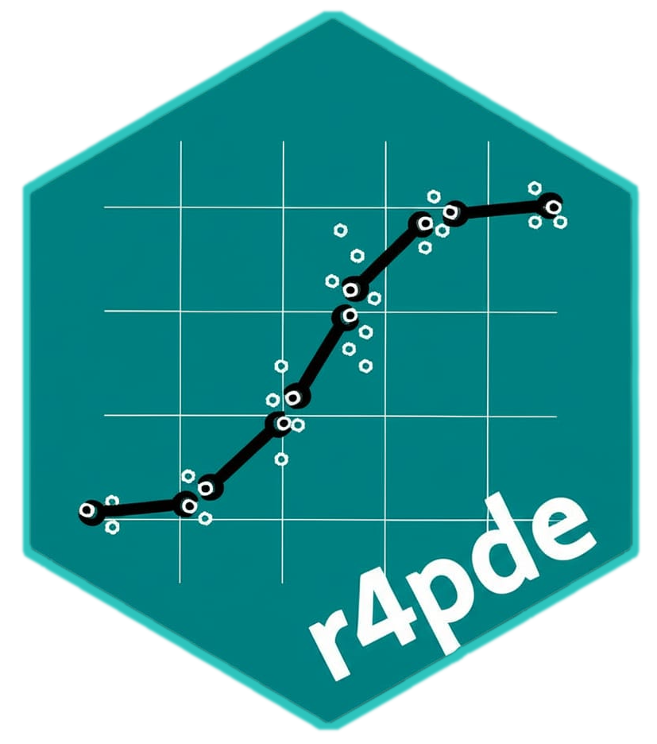

Compare concordance statistics between conditions
Source:R/sad_conventional.R
sad_compare.RdSecond stage of the conventional SAD validation: compares the mean of each Lin statistic between conditions (for example unaided versus aided, or two or more SADs) and returns the summary table with letters of a Tukey test, as in Table 2 of Franceschi et al. (2020).
Arguments
- x
An object returned by
sad_data().- ccc
Statistics per rater, by default
sad_ccc(x).- stats
Statistics to compare.
- adjust
Multiplicity adjustment passed to
emmeans::contrast().- conditions
Optional character vector to select and order conditions.
- alpha
Significance level for the letters.
- digits
Digits used in the formatted table.
Value
An object of class sad_compare: a list with table (formatted
table), estimates (means, standard errors and confidence limits),
pairwise (all pairwise contrasts), models and ccc.
Details
When the same raters appear in more than one condition, each statistic is
analysed with a linear mixed model with rater as a random intercept
(lmerTest::lmer(y ~ condition + (1 | rater))), so the comparison is paired.
Otherwise an ordinary linear model is used. Letters are assigned so that a
is the condition with the highest mean; means that share a letter do not
differ at level alpha.
References
Franceschi, V. T., Alves, K. S., Mazaro, S. M., Godoy, C. V., Duarte, H. S. S., and Del Ponte, E. M. (2020). A new standard area diagram set for assessment of severity of soybean rust improves accuracy of estimates and optimizes resource use. Plant Pathology 69:495-505.
Examples
# \donttest{
x <- sad_data(SADRustSoybean, wide = c(UN = "unaided", SAD = "aided"), group = "sad")
sad_compare(x)
#> Lin's statistics by condition - linear mixed model, rater random
#> Means followed by the same letter do not differ (tukey, alpha = 0.05).
#>
#> condition N u v Cb r rho_c
#> UN_Old 20 0.21 a 1.23 a 0.90 b 0.89 b 0.80 b
#> UN_New 20 0.10 a 1.19 a 0.91 b 0.88 b 0.80 b
#> SAD_Old 20 -0.29 b 0.97 b 0.92 b 0.90 b 0.83 b
#> SAD_New 20 0.00 a 1.00 b 1.00 a 0.97 a 0.96 a
# }